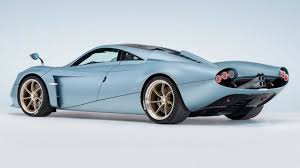
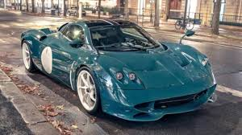
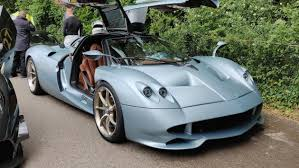
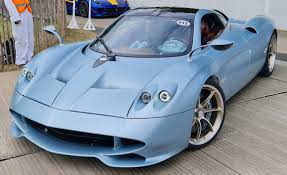
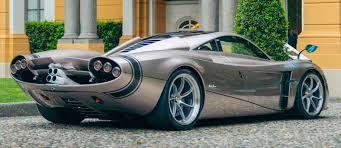

Pagani Codalunga Özellikleri
Motor ve Performans
Motor Tipi: 6.0 litre V12 çift turbo motor (Mercedes-AMG tarafından üretilmiştir)
Motor Gücü: 840 beygir gücü (hp)
Tork: 1.100 Nm
Şanzıman: 7-ileri sıralı manuel şanzıman (Zonda tarzı)
0-100 km/s Hızlanma: 3.4 saniye
Maksimum Hız: 355 km/s
Tasarım ve Yapı
Uzun Burun Tasarımı: Codalunga, adını uzun burun yapısından alır ve klasik Pagani tasarımını yansıtır.
Karbon Fiber Gövde: Hafiflik ve dayanıklılık için yüksek kaliteli karbon fiber malzeme kullanılır.
Aerodinamik Unsurlar: Aracın aerodinamik verimliliği, stabiliteyi artırmak için optimize edilmiştir.
Ağırlık ve Boyutlar
Ağırlık: 1.350 kg civarında
Boyutlar: Uzunluk: 4.810 mm, Genişlik: 2.030 mm, Yükseklik: 1.160 mm
İç Mekan
Lüks İç Mekan: Deri, alüminyum ve karbon fiber detaylarla donatılmış, özel işçilik iç mekan.
Gösterge Paneli: Dijital ve analog göstergelerle harmanlanmış şık bir gösterge paneli.
Koltuklar ve Malzeme: Konforlu deri koltuklar, karbon fiber unsurlar ile desteklenmiştir.
Fren Sistemi ve Lastikler
Fren Sistemi: Brembo karbon-seramik disk frenler ile yüksek performans frenleme sağlanır.
Lastikler: Michelin Pilot Sport lastikleri, mükemmel yol tutuşu sağlar.
Özel Üretim ve Sınırlı Sayıda
Sınırlı Üretim: Yalnızca 5 adet üretilmiştir.
Özel Tasarım: Müşteriler aracın renk ve iç mekan detaylarında özelleştirme yapabilirler.
Fiyat
Fiyat: Yaklaşık 7 milyon Euro civarındadır.
Teknoloji ve Sürüş Dinamiği
Sürüş Modları: Farklı yol koşullarına uyum sağlayan birden fazla sürüş modu sunulur.
Süspansiyon Sistemi: Yüksek performanslı süspansiyon sistemi, yol tutuşunu ve sürüş konforunu optimize eder.
FotoGaleri
 
 